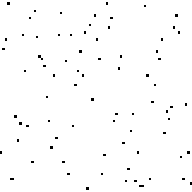
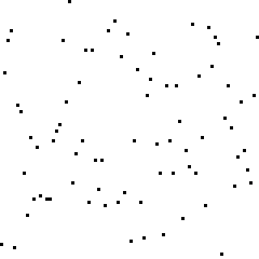
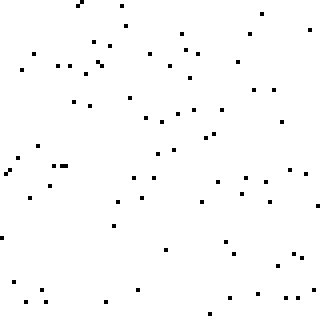
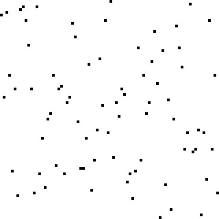
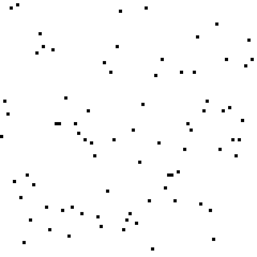

- algorithm
-
n. a process or set of rules to be followed in calculations or other problem-solving operations
When we make a program, all we are doing is writing a set of instructions for computer to follow. These instructions, of course, must be perfect — they have to be simple enough for a computer to follow, since computers only know so much and can’t interpret a programmer’s intent.
With the introduction of modular programming, many oft-repeated calculations could be encapsulated into a function, and later these functions into libraries. Standard yet complicated procedures — like getting an integral input[1] — could be implemented with a simple function call.
A simple program which takes two integral values and spits out its sum could be simplified to two variable decalarations, and two lines of code. It’s juat a simple algorithm.
Most algorithms, however, aren’t so simple. In Computer Science, algorithms are about somehow manipulating memory to solve computational problems in a timely manner — computers, after all, only know how to manipulate memory.
Time Complexity: Measuring an Algorithm
It certainly wouldn’t be a stretch to say that some algorithms are better than others. If, for example, you had the following problem:
Given a sorted (least-to-greatest) array of size
n, find the index of a valuem. If it does not exist, result-1.
One way would be to iterate along the list, checking each and every element to see if it’s the desired value. This is called the linear search.
Another way, commonly called the binary search, leverages the fact that the array is sorted. If one starts from the middle, they can easily cut the problem to half its size, as the desired value is on one side or the other and figuring out which side it’s on relies on a simple comparison.
Clearly, both will work — both algorithms will eventually find the answer. But you can also make the observation that the binary search is better. It’s not because it’s more sophisticated, but rather that it’s faster. If you had a 1024-element array, you can expect the following number of iterations for each algorithm:
| Linear Search | Binary Search | |
|---|---|---|
Best Case |
1 iteration (once in 1024) |
1 iteration (once in 1024) |
Average Case |
512 iterations |
9 iterations |
Worst Case |
1024 iterations (once in 1024) |
10 iterations (once in 2) |
So, is binary search fifty times faster than linear search? Well, not exactly.
First of all, binary search requires more time per iteration, as it does at least one addition comparison. Secondly, binary search is less efficient over the cache[2].
But most importantly, binary search uses an entirely different approach from linear search, and it grows differently. If you double the size of your input, linear search will take twice as many iterations on average and in the worst case. Binary search, on the other hand, will take one more iteration.
They scale differently, and when it comes to writing good algorithms, that’s what matters.
Efficient scaling really matters.
The first line of input contains three integers K, N and M (1 ≤ K ≤ 200; 2 ≤ N ≤ 2000; 1 ≤ M ≤ 10000), each separated by one space.
The next M lines each contain 4 integers ai bi ti hi (1 ≤ ai, bi ≤ N; 1 ≤ ti ≤ 105; 0 ≤ hi ≤ 200), each separated by one space. The i-th line in this set of M lines describes the i-th sea route (which runs from island ai to island bi, takes ti minutes and wears down the ship’s hull by hi centimetres). Notice that ai ≠ bi (that is, the ends of a sea route are distinct islands).
(emphasis added)
Asymptotic Analysis
How do we score an algorithm quantitatively? Obviously, we don’t want to express the "time" an algorithm would take in comparison to other algorithms, because those numbers are useless.
Instead, we should try to show how it scales. To do that, we use a technique called asymptotic analysis. Formally, we do that by looking at what type of mathematical function best represents the running time of an algorithm.
Linear search takes linear time, so it scales linearly. If you were to express this as a mathematical function, where \(T\) is time, \(n\) is the input size, and \(c\) is some proportionality coefficient, you’d have \(T=cn\).
With binary search, you may notice that it scales logarithmically. For binary search, you’d express that with \(T=c\log{n}\).
There’s a few problems with this approach, though. That coefficient \(c\) varies from environment to environment, so it’s not a very useful measure. And the time isn’t always proportional to some function on the input size, as most algorithms for most problems can end earlier than the worst- or average case. We just need to focus on scaling.
To deal with this, we developed big-O notation.
Formally,
A function \(f(x)\) is \(O(g(x))\),
that is, \(f(x)=O(g(x))\text{ as }x\rightarrow\infty\) if and only if
\(|f(x)|<|Mg(x)|\) for some constant \(M\) and for all \(x\) where \(x \gg 0\).
the free encyclopedia
Essentially, what this means is that \(g(x)\) is the upper bound of the growth \(f(x)\).
Using this notation, we can say that linear search is \(O(n)\) and binary search \(O(\log{n})\) for \(n\), the size of our input array.
This might seem rather alien and unusual. In the next section, while we discuss how we can develop algorithms, we’ll also do some more work with time complexity.
Developing Algorithms
Now that you’re acquainted with terms and with notation, let’s discuss solving a common algorithm[3].
Given an unsorted array \(n\) elements and an operator \(\lt\) which orders these elements, sort the array from least to greatest.
 The brute-force approach is rather obvious: take the minimum element from the unsorted array, and push that onto the end of the sorted array you’re constructing. This is easily achieved in-place[4] by searching one-by-one through the unsorted array, and then swapping that minimum element with the first element of the unsorted array to construct the sorted array.
Our first sort is based on selecting elements, so we’ll call it selection sort.
For each of the \(n\) elements we have to add to construct the sorted array, we’re making up to \(n-1\) comparisons. To be precise, we make exactly \(\frac{1}{2}n(n+1)\) comparisons (and \(n-1\) swaps). As such, selection sort grows quadratically, and its time complexity is \(O(n^2)\).
Clearly, it’ll be pretty slow for large inputs. Is there a better way?
You may notice that one of the worst problems with selection sort is that it’s not adaptable: it does blind searches and nothing else. When the input array is already nearly sorted, it won’t get any faster. Instead of iteratively searching, we could try iteratively moving elements closer to where they should be.
 We’ll still move along the array one-by-one, but this time for every comparison we’ll swap if appropriate. You’ll notice that it’s much faster than selection sort when the array’s already nearly sorted.
This sort is based on bubbling elements up, one at a time, so we’ll call it bubble sort. It turns out, though, that it’s usually worse than selection sort[5].
For every pass through the array, one more element is guaranteed to be sorted, so we need to make \(n\) passes through the array. And in every pass, we make \(n\) comparisons and \(O(n)\) swaps[6]. That makes for an overall time complexity of… \(O(n^2)\)[7].
Let’s take a look at selection sort again. Selection sort’s main bottleneck is finding the answer to "where do we take the next element out?", which requires a search among all unordered elements. If we change that question to "where do we put the next element in?", then we can leverage the fact that we’ll be inserting into a sorted list, and finding where it should go doesn’t require a search among all unordered elements. We can just insert the next element of the unsorted array.
 Before we go crazy implementing a binary search to figure out the insertion site, consider that to insert an element requires shifting everything after it once to the right. We may was well just add the element to the end, and bubble it down to the right position.
Since we came up with this sort from the idea of inserting, we’ll call this insertion sort. This one really is faster than selection sort.
For each of the \(n\) elements we have to add to the sorted array, we make \(O(n)\) comparisons and swaps for an overall time complexity of, once again, \(O(n^2)\). But this time, it really is faster.
If we know the largest size an element can be away from its proper position, there’s another way to write the time complexity: for an input of size \(n\) where the maximal displacement is \(k\), for each \(n\) elements to add, we make \(O(k)\) comparisons and swaps for an overall time complexity of \(O(nk)\). Since \(k\leq n\), it’s sure to be faster than just \(O(n^2)\).
But our overall time complexity is still just \(O(n^2)\). Can we do better than this baseline?
Notice what slows down insertion sort: when elements are far away from their supposed position, they’re inserted slowly. But it’s fast for both small arrays and arrays with low displacement. Is it perhaps possible to first do some smaller sorts on the array to lower the average displacements first, before we run insertion sort on the entire thing?
If we run insertion sort on subsets of the array — say, every \(g\) elements — first, then we’ll be able to lower the \(k\)-values if we then do a normal insertion sort on the array. If we, for example, do it every four elements (for every group of every four elements), it’ll guarantee that the \(k\)-value of a subsequent insertion sort is, at most, \(n-4\); and likely an average displacement of \(\frac{n}{4}\).
If it’s too large for a 4-element gap first, then we can also do another similar pass before it, with a larger gap. And if \(n\) is still too large, we can just keep adding more passes with larger gaps before it.
This method of sorting was first published by Donald Shell in 1959, and so it is aptly named Shell sort. Its time complexity is a bit complicated[8] to calculate, and depends specifically on the gap sequences (the "let’s only do every \(g\) elements" thing). The best gap sequence runs in \(O(n\log^2n)\)[9] but is impractical. In practice, it runs in \(O(n^{\frac{4}{3}})\)[10] or \(\Theta(n^{\frac{3}{2}})\)[11][12]
By analyzing insertion sort, we were able to come up with Shell sort — which has finally managed to improve our time complexity.
But can we do better?
 There’s another problem dealing with sorted arrays: merging two sorted arrays together.
It’s not a difficult problem, and the solution is quite trivial — try to figure it out yourself; footnote 13 has the answer[13].
There’s another problem dealing with sorted arrays: merging two sorted arrays together.
It’s not a difficult problem, and the solution is quite trivial — try to figure it out yourself; footnote 13 has the answer[13].
So if we get two sorted arrays, we can merge them into a larger sorted array; then that means that if we get one unsorted array, we could split it in two, sort both sides, and then merge it back. We’ll call this merge sort since we’re exploiting merging behaviours.
How do we sort either side? Well, with merge sort!
But then when do we stop splitting the array? When it’s not possible: when there’s just one element left.
But doesn’t that leave unsorted lists? Well, not really: a single-element array is sorted.
A simple idea can come a long way. Merge sort has a time complexity of \(\Theta(n\log{n})\): at every level of recursion[14], an entire pass is done with \(\Theta(n)\) comparisons, and recursive depth is \(\Theta(\log{n})\).
It turns out that according to classical mechanics[15], \(\Theta(n\log{n})\) is the absolute fastest we can ever sort things[16]. But that doesn’t mean that we’re done with merge sort. You may have noticed, for example, that it isn’t adaptive[17]. You may also have noticed that it’s the first sort that uses extra memory: specifically, it uses \(O(n)\) extra memory. Can we write an adaptive, in-place sort that runs in \(O(n\log{n})\) time?
Let’s use the same divide-and-conquer idea from merge sort, as well as the idea of first approximating destinations from Shell sort. If we can somehow divide the array in half, and then move everything on the lower end to the left and everything on the upper end to right, then we’ve done everything we need to set up another recursive sort.
To do this, we can choose a pivot from the array; then, going from both ends, find anything out-of-place to swap.
Like with merge sort, for every recursive level there will be \(O(n)\) comparisons and swaps, and — if you choose the pivots well[18] — there’ll be \(\Theta(\log{n})\) recursive depth. It’s in-place, adaptive, easy on the cache, and uses little overhead. It’s quick.
So, naturally, we call it quicksort.
There are only two hard problems in computer science: cache invalidation, naming things, and off-by-one errors.